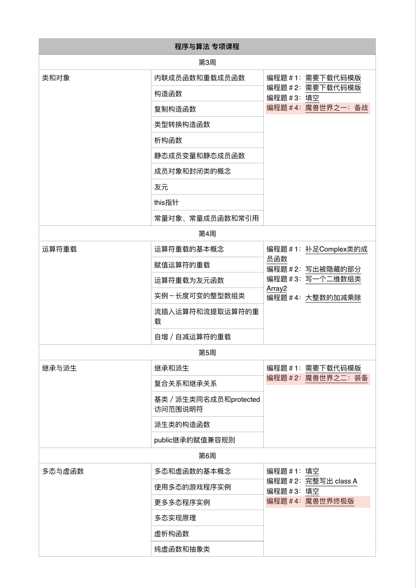

<!DOCTYPE html>
<html>
<head><meta name="generator" content="Hexo 3.9.0">
  <!-- hexo-inject:begin --><!-- hexo-inject:end --><meta charset="utf-8">
  

  
  <title>面向对象程序设计-魔兽世界 | </title>
  <meta name="viewport" content="width=device-width, initial-scale=1, maximum-scale=1">
  <meta name="description" content="魔兽世界这个系列的题一共三道，是coursera上北大的专项课程《程序设计与算法》的第三部分课程《C++程序设计》中第3、5、6周课程的练习题，针对类和对象、继承与派生、多态和虚拟这个几个部分的练习。">
<meta property="og:type" content="article">
<meta property="og:title" content="面向对象程序设计-魔兽世界">
<meta property="og:url" content="http://xiaomeizhuang.github.io/2019/10/22/面向对象程序设计-魔兽世界/index.html">
<meta property="og:site_name">
<meta property="og:description" content="魔兽世界这个系列的题一共三道，是coursera上北大的专项课程《程序设计与算法》的第三部分课程《C++程序设计》中第3、5、6周课程的练习题，针对类和对象、继承与派生、多态和虚拟这个几个部分的练习。">
<meta property="og:locale" content="en">
<meta property="og:image" content="http://xiaomeizhuang.github.io/2019/10/22/面向对象程序设计-魔兽世界/courseratask.png">
<meta property="og:image" content="http://xiaomeizhuang.github.io/2019/10/22/面向对象程序设计-魔兽世界/question.png">
<meta property="og:updated_time" content="2019-10-22T15:17:57.401Z">
<meta name="twitter:card" content="summary">
<meta name="twitter:title" content="面向对象程序设计-魔兽世界">
<meta name="twitter:description" content="魔兽世界这个系列的题一共三道，是coursera上北大的专项课程《程序设计与算法》的第三部分课程《C++程序设计》中第3、5、6周课程的练习题，针对类和对象、继承与派生、多态和虚拟这个几个部分的练习。">
<meta name="twitter:image" content="http://xiaomeizhuang.github.io/2019/10/22/面向对象程序设计-魔兽世界/courseratask.png">
  
  
    <link rel="icon" href="/favicon.png">
  
  
    <link href="//fonts.googleapis.com/css?family=Source+Code+Pro" rel="stylesheet" type="text/css">
  
  <link rel="stylesheet" href="/css/style.css"><!-- hexo-inject:begin --><!-- hexo-inject:end -->
</head>
</html>
<body>
  <!-- hexo-inject:begin --><!-- hexo-inject:end --><div id="container">
    <div id="wrap">
      <header id="header">
  <div id="banner"></div>
  <div id="header-outer" class="outer">
    <div id="header-title" class="inner">
      <h1 id="logo-wrap">
        <a href="/" id="logo"></a>
      </h1>
      
    </div>
    <div id="header-inner" class="inner">
      <nav id="main-nav">
        <a id="main-nav-toggle" class="nav-icon"></a>
        
          <a class="main-nav-link" href="/">Home</a>
        
          <a class="main-nav-link" href="https://github.com/xiaomeizhuang">Github</a>
        
          <a class="main-nav-link" href="/About">About</a>
        
      </nav>
      <nav id="sub-nav">
        
        <a id="nav-search-btn" class="nav-icon" title="Search"></a>
      </nav>
      <div id="search-form-wrap">
        <form action="//google.com/search" method="get" accept-charset="UTF-8" class="search-form"><input type="search" name="q" class="search-form-input" placeholder="Search"><button type="submit" class="search-form-submit">&#xF002;</button><input type="hidden" name="sitesearch" value="http://xiaomeizhuang.github.io"></form>
      </div>
    </div>
  </div>
</header>
      <div class="outer">
        <section id="main"><article id="post-面向对象程序设计-魔兽世界" class="article article-type-post" itemscope itemprop="blogPost">
  <div class="article-meta">
    <a href="/2019/10/22/面向对象程序设计-魔兽世界/" class="article-date">
  <time datetime="2019-10-22T14:41:10.000Z" itemprop="datePublished">2019-10-22</time>
</a>
    
  </div>
  <div class="article-inner">
    
    
      <header class="article-header">
        
  
    <h1 class="article-title" itemprop="name">
      面向对象程序设计-魔兽世界
    </h1>
  

      </header>
    
    <div class="article-entry" itemprop="articleBody">
      
      <!-- Table of Contents -->
      
        <div id="toc" class="toc-article">
          <strong class="toc-title">目录</strong>
          <ol class="toc"><li class="toc-item toc-level-3"><a class="toc-link" href="#魔兽世界一备战"><span class="toc-number">1.</span> <span class="toc-text">魔兽世界一：备战</span></a><ol class="toc-child"><li class="toc-item toc-level-4"><a class="toc-link" href="#题目"><span class="toc-number">1.1.</span> <span class="toc-text">题目</span></a><ol class="toc-child"><li class="toc-item toc-level-5"><a class="toc-link" href="#描述"><span class="toc-number">1.1.1.</span> <span class="toc-text">描述</span></a></li><li class="toc-item toc-level-5"><a class="toc-link" href="#输入"><span class="toc-number">1.1.2.</span> <span class="toc-text">输入</span></a></li><li class="toc-item toc-level-5"><a class="toc-link" href="#输出"><span class="toc-number">1.1.3.</span> <span class="toc-text">输出</span></a></li><li class="toc-item toc-level-5"><a class="toc-link" href="#样例输入"><span class="toc-number">1.1.4.</span> <span class="toc-text">样例输入</span></a></li><li class="toc-item toc-level-5"><a class="toc-link" href="#样例输出"><span class="toc-number">1.1.5.</span> <span class="toc-text">样例输出</span></a></li></ol></li><li class="toc-item toc-level-4"><a class="toc-link" href="#分析"><span class="toc-number">1.2.</span> <span class="toc-text">分析🤔</span></a><ol class="toc-child"><li class="toc-item toc-level-5"><a class="toc-link" href="#class-headquarter"><span class="toc-number">1.2.1.</span> <span class="toc-text">class Headquarter</span></a></li><li class="toc-item toc-level-5"><a class="toc-link" href="#class-warrior"><span class="toc-number">1.2.2.</span> <span class="toc-text">class Warrior</span></a></li><li class="toc-item toc-level-5"><a class="toc-link" href="#main函数"><span class="toc-number">1.2.3.</span> <span class="toc-text">main函数</span></a></li></ol></li><li class="toc-item toc-level-4"><a class="toc-link" href="#代码"><span class="toc-number">1.3.</span> <span class="toc-text">代码😊</span></a></li></ol></li><li class="toc-item toc-level-3"><a class="toc-link" href="#魔兽世界装备二"><span class="toc-number">2.</span> <span class="toc-text">魔兽世界：装备二</span></a><ol class="toc-child"><li class="toc-item toc-level-4"><a class="toc-link" href="#题目-1"><span class="toc-number">2.1.</span> <span class="toc-text">题目</span></a><ol class="toc-child"><li class="toc-item toc-level-5"><a class="toc-link" href="#描述-1"><span class="toc-number">2.1.1.</span> <span class="toc-text">描述</span></a></li><li class="toc-item toc-level-5"><a class="toc-link" href="#输入-1"><span class="toc-number">2.1.2.</span> <span class="toc-text">输入</span></a></li><li class="toc-item toc-level-5"><a class="toc-link" href="#输出-1"><span class="toc-number">2.1.3.</span> <span class="toc-text">输出</span></a></li><li class="toc-item toc-level-5"><a class="toc-link" href="#样例输入-1"><span class="toc-number">2.1.4.</span> <span class="toc-text">样例输入</span></a></li><li class="toc-item toc-level-5"><a class="toc-link" href="#样例输出-1"><span class="toc-number">2.1.5.</span> <span class="toc-text">样例输出</span></a></li></ol></li><li class="toc-item toc-level-4"><a class="toc-link" href="#分析-1"><span class="toc-number">2.2.</span> <span class="toc-text">分析🤔</span></a><ol class="toc-child"><li class="toc-item toc-level-5"><a class="toc-link" href="#derived-class"><span class="toc-number">2.2.1.</span> <span class="toc-text">derived class</span></a></li><li class="toc-item toc-level-5"><a class="toc-link" href="#polymorphism"><span class="toc-number">2.2.2.</span> <span class="toc-text">polymorphism</span></a></li></ol></li><li class="toc-item toc-level-4"><a class="toc-link" href="#代码-1"><span class="toc-number">2.3.</span> <span class="toc-text">代码😊</span></a></li></ol></li><li class="toc-item toc-level-3"><a class="toc-link" href="#魔兽世界终极版"><span class="toc-number">3.</span> <span class="toc-text">魔兽世界：终极版</span></a><ol class="toc-child"><li class="toc-item toc-level-4"><a class="toc-link" href="#题目-2"><span class="toc-number">3.1.</span> <span class="toc-text">题目😢</span></a><ol class="toc-child"><li class="toc-item toc-level-5"><a class="toc-link" href="#描述-2"><span class="toc-number">3.1.1.</span> <span class="toc-text">描述</span></a></li><li class="toc-item toc-level-5"><a class="toc-link" href="#输入-2"><span class="toc-number">3.1.2.</span> <span class="toc-text">输入</span></a></li><li class="toc-item toc-level-5"><a class="toc-link" href="#输出-2"><span class="toc-number">3.1.3.</span> <span class="toc-text">输出</span></a></li><li class="toc-item toc-level-5"><a class="toc-link" href="#样例输入-2"><span class="toc-number">3.1.4.</span> <span class="toc-text">样例输入</span></a></li><li class="toc-item toc-level-5"><a class="toc-link" href="#样例输出-2"><span class="toc-number">3.1.5.</span> <span class="toc-text">样例输出</span></a></li></ol></li><li class="toc-item toc-level-4"><a class="toc-link" href="#分析-2"><span class="toc-number">3.2.</span> <span class="toc-text">分析😣</span></a></li></ol></li></ol>
        </div>
      
        <p><br></p>
<p>魔兽世界这个系列的题一共三道，是coursera上北大的专项课程《程序设计与算法》的第三部分课程《C++程序设计》中第3、5、6周课程的练习题，针对类和对象、继承与派生、多态和虚拟这个几个部分的练习。</p>
<a id="more"></a>
<p></p>
<p>据说这也是北大的C++程序设计实习课的大作业，一般给1~2周让同学完成。这个题是北大信院的带ACM的郭炜老师的书《新标准C++程序设计教程》的最后实践内容：</p>
<p></p>
<p>这三题真的挺难的，对我来说比leetcode的hard题要难，Open Judge上有88.5%的人打出最高难度五星的评价，上完C++这几部分的课程，以为听懂了就能完成这几道题了，事实证明并不是🙃。做这道题时，我又跑去把《C++ Primer 5th》的第7章类，第15章面向对象程序设计认真温习了，还用思维导图mindnode做了读书笔记，由于身边也没有学C++的人，也没有人讨论，所以花了不少时间😅。这几个题给我最大的感受就是继承和多态，尤其第二题，用继承和多态的方式，代码就会简洁很多；封装这方面，原本我以为这样小项目不用也行，设为public还方便访问，但还是不放心所以看了一下《Effective C++》，Item:22说到最好要把数据成员设为private，因为设为public意味着假如这个类被广泛使用的话那么后期就很难修改了，只有private才能保证封装对类的控制权才可以掌握在自己手里。所以数据成员就都设为private啦，需要哪个数据再单独写个访问的成员函数即可。在每题附上代码之前我都写了自己的分析（第三题还没做）。</p>
<p><br></p>
<h3 id="魔兽世界一备战"><a href="http://cxsjsxmooc.openjudge.cn/test/B/" target="_blank" rel="noopener">魔兽世界一：备战</a></h3>
<p><br></p>
<h4 id="题目">题目</h4>
<p>总时间限制: 1000ms 内存限制: 65536kB</p>
<h5 id="描述">描述</h5>
<p>魔兽世界的西面是红魔军的司令部，东面是蓝魔军的司令部。两个司令部之间是依次排列的若干城市。 红司令部，City 1，City 2，……，City n，蓝司令部</p>
<p>两军的司令部都会制造武士。武士一共有 dragon 、ninja、iceman、lion、wolf 五种。每种武士都有编号、生命值、攻击力这三种属性。</p>
<p>双方的武士编号都是从1开始计算。红方制造出来的第n个武士，编号就是n。同样，蓝方制造出来的第n个武士，编号也是n。</p>
<p>武士在刚降生的时候有一个生命值。</p>
<p>在每个整点，双方的司令部中各有一个武士降生。</p>
<p>红方司令部按照iceman、lion、wolf、ninja、dragon的顺序循环制造武士。</p>
<p>蓝方司令部按照lion、dragon、ninja、iceman、wolf的顺序循环制造武士。</p>
<p>制造武士需要生命元。</p>
<p>制造一个初始生命值为m的武士，司令部中的生命元就要减少m个。</p>
<p>如果司令部中的生命元不足以制造某个按顺序应该制造的武士，那么司令部就试图制造下一个。如果所有武士都不能制造了，则司令部停止制造武士。</p>
<p>给定一个时间，和双方司令部的初始生命元数目，要求你将从0点0分开始到双方司令部停止制造武士为止的所有事件按顺序输出。 一共有两种事件，其对应的输出样例如下：</p>
<ol type="1">
<li><p>武士降生 输出样例： 004 blue lion 5 born with strength 5,2 lion in red headquarter 表示在4点整，编号为5的蓝魔lion武士降生，它降生时生命值为5，降生后蓝魔司令部里共有2个lion武士。（为简单起见，不考虑单词的复数形式）注意，每制造出一个新的武士，都要输出此时司令部里共有多少个该种武士。</p></li>
<li><p>司令部停止制造武士 输出样例： 010 red headquarter stops making warriors 表示在10点整，红方司令部停止制造武士</p></li>
</ol>
<p>输出事件时：</p>
<p>首先按时间顺序输出；</p>
<p>同一时间发生的事件，先输出红司令部的，再输出蓝司令部的。</p>
<h5 id="输入">输入</h5>
<p>第一行是一个整数，代表测试数据组数。</p>
<p>每组测试数据共两行。</p>
<p>第一行：一个整数M。其含义为， 每个司令部一开始都有M个生命元( 1 &lt;= M &lt;= 10000)。</p>
<p>第二行：五个整数，依次是 dragon 、ninja、iceman、lion、wolf 的初始生命值。它们都大于0小于等于10000。</p>
<h5 id="输出">输出</h5>
<p>对每组测试数据，要求输出从0时0分开始，到双方司令部都停止制造武士为止的所有事件。 对每组测试数据，首先输出"Case:n" n是测试数据的编号，从1开始 。 接下来按恰当的顺序和格式输出所有事件。每个事件都以事件发生的时间开头，时间以小时为单位，有三位。</p>
<h5 id="样例输入">样例输入</h5>
<figure class="highlight c++"><table><tr><td class="gutter"><pre><span class="line">1</span><br><span class="line">2</span><br><span class="line">3</span><br></pre></td><td class="code"><pre><span class="line"><span class="number">1</span></span><br><span class="line"><span class="number">20</span></span><br><span class="line"><span class="number">3</span> <span class="number">4</span> <span class="number">5</span> <span class="number">6</span> <span class="number">7</span></span><br></pre></td></tr></table></figure>
<h5 id="样例输出">样例输出</h5>
<figure class="highlight c++"><table><tr><td class="gutter"><pre><span class="line">1</span><br><span class="line">2</span><br><span class="line">3</span><br><span class="line">4</span><br><span class="line">5</span><br><span class="line">6</span><br><span class="line">7</span><br><span class="line">8</span><br><span class="line">9</span><br><span class="line">10</span><br></pre></td><td class="code"><pre><span class="line">Case:<span class="number">1</span></span><br><span class="line"><span class="number">000</span> red iceman <span class="number">1</span> born with strength <span class="number">5</span>,<span class="number">1</span> iceman in red headquarter</span><br><span class="line"><span class="number">000</span> blue lion <span class="number">1</span> born with strength <span class="number">6</span>,<span class="number">1</span> lion in blue headquarter</span><br><span class="line"><span class="number">001</span> red lion <span class="number">2</span> born with strength <span class="number">6</span>,<span class="number">1</span> lion in red headquarter</span><br><span class="line"><span class="number">001</span> blue dragon <span class="number">2</span> born with strength <span class="number">3</span>,<span class="number">1</span> dragon in blue headquarter</span><br><span class="line"><span class="number">002</span> red wolf <span class="number">3</span> born with strength <span class="number">7</span>,<span class="number">1</span> wolf in red headquarter</span><br><span class="line"><span class="number">002</span> blue ninja <span class="number">3</span> born with strength <span class="number">4</span>,<span class="number">1</span> ninja in blue headquarter</span><br><span class="line"><span class="number">003</span> red headquarter stops making warriors</span><br><span class="line"><span class="number">003</span> blue iceman <span class="number">4</span> born with strength <span class="number">5</span>,<span class="number">1</span> iceman in blue headquarter</span><br><span class="line"><span class="number">004</span> blue headquarter stops making warriors</span><br></pre></td></tr></table></figure>
<p><br></p>
<h4 id="分析">分析🤔</h4>
<p>class Headquarter代表司令部类，class Warrior代表武士类。</p>
<h5 id="class-headquarter">class Headquarter</h5>
<p>class Headquarter除了显而易见的int totalLifeValue和int color的成员变量之外，还需要生产武士的成员函数Produce(){ }，这个函数负责生产武士，直到剩余生命元小于任何武士的生命值时停止。</p>
<p>每次生产武士，前提是生命元要足够，即当前生产武士所需的生命值要小于生命元，那么直接进行生产武士；而当司令部的生命元开始拮据，即生产某个武士时出现生命元不足的状况，那么就需要while循环来遍历武士种类，直到查找可以生产的武士时，就退出循环；或者遍历所有的武士种类后但仍未找到，这种情况也会退出循环。因为while循环结束条件有两种，因此还需要判断是哪一种情况，如果退出循环时的武士的生命值还是大于司令部的生命元，那就说明是因为后者而退出循环。为了表示因为后者而退出的循环，用一个标志变量bool stopped来说明，如果因为后者，这个stopped变量值就为true，意味着无论如何都停止了无法再生产武士了。因此每次司令部调用Produce生产武士时得首先判断stopped变量，如果stopped仍然为false，说明还没有确定停止生产，经过这步判断才又可能需要进入前面所说的while循环。</p>
<p>生产武士的时候，每生产一个武士就需要new一个武士对象，调用武士类构造函数。因为这些武士对象都属于这个司令部，所以这两个类是composition关系，因此在Headqaurter中增加一个Warrior类的指针数组，类指针依次指向新new出来的武士对象，方便司令部操作武士对象（还有部分原因是因为后面的扩展题，需要用到基类指针指向派生类这种多态的情况），这个方法上课时老师有明显叮嘱过。</p>
<p>同时，生产武士还有其它结果：该司令部的生命元要相应地减去生命值；统计该种武士的数量，因此用int warriorNum[WARRIOR_NUM]数组来存放每种武士的数量；以及该司令部生产的武士总数量，用int totalWarriorNum统计。</p>
<p>生产武士顺序由curMakingSeqIdx迭代，相当于for循环里的临时变量i，但是这个变量后面还会用到，所以放在类的私有成员里。</p>
<p>武士的制作顺序用一个整数数组表示，数组中存放的数字就代表了武士，这其实是一个全局变量，但是和Headquarter这个类紧密相关，便把它写到类里，不需要每个对象都拥有一份，因此声明为static。</p>
<p>尽可能把Headquarter拥有的成员变量声明为私有，这样封装性更好，如果需要访问某一个变量，那么设置一个public函数，比如int GetColor( )函数来访问司令部的颜色int color。</p>
<p>析构函数~Headquarter( )需要依次销毁动态分配的武士类对象，内置类型不需要在析构函数中提到。</p>
<p>void Init( )用来给Headquarter对象赋值，main函数里创建Headquarter对象是用默认构造函数，不同的case中可以进行重新赋值。</p>
<h5 id="class-warrior">class Warrior</h5>
<p>class Warrior的成员变量除了表示武士种类的代号int kindNo，还有一个指向司令部的指针Headquarter *pHeadquarter，可以通过这个指针访问司令部的成员，比如通过pHeadquarter调用司令部的Getcolor( )函数和访问int warriorNum[kindNo]等成员变量。</p>
<p>剩下的int no是司令部生产武士时的序号，因为后面的题中Warrior的派生类需要用它给成员变量赋值，因此提前考虑在此算作成员变量一员。</p>
<p>虽然武士有很多种，但是这里并没有用到派生类，因为这些武士的特点都相同，对他们的操作也是相同的，也就是成员变量和成员函数都是相同的，因此不需要用派生类，而不同的生命值等这种特点其实是体现在不同的实例化。</p>
<h5 id="main函数">main函数</h5>
<p>按照要求需要输入数据测试组数Case，在屏幕输出Case:1的提示之后，输入司令部的生命元int m，以及各个武士的生命值。</p>
<p>构造两个Headquarter对象，一个实例对象为RedHead，另一个实例对象为BlueHead，在每个case中，用Init()函数对这两个对象重新赋值。</p>
<p><br></p>
<h4 id="代码">代码😊</h4>
<figure class="highlight c++"><table><tr><td class="gutter"><pre><span class="line">1</span><br><span class="line">2</span><br><span class="line">3</span><br><span class="line">4</span><br><span class="line">5</span><br><span class="line">6</span><br><span class="line">7</span><br><span class="line">8</span><br><span class="line">9</span><br><span class="line">10</span><br><span class="line">11</span><br><span class="line">12</span><br><span class="line">13</span><br><span class="line">14</span><br><span class="line">15</span><br><span class="line">16</span><br><span class="line">17</span><br><span class="line">18</span><br><span class="line">19</span><br><span class="line">20</span><br><span class="line">21</span><br><span class="line">22</span><br><span class="line">23</span><br><span class="line">24</span><br><span class="line">25</span><br><span class="line">26</span><br><span class="line">27</span><br><span class="line">28</span><br><span class="line">29</span><br><span class="line">30</span><br><span class="line">31</span><br><span class="line">32</span><br><span class="line">33</span><br><span class="line">34</span><br><span class="line">35</span><br><span class="line">36</span><br><span class="line">37</span><br><span class="line">38</span><br><span class="line">39</span><br><span class="line">40</span><br><span class="line">41</span><br><span class="line">42</span><br><span class="line">43</span><br><span class="line">44</span><br><span class="line">45</span><br><span class="line">46</span><br><span class="line">47</span><br><span class="line">48</span><br><span class="line">49</span><br><span class="line">50</span><br><span class="line">51</span><br><span class="line">52</span><br><span class="line">53</span><br><span class="line">54</span><br><span class="line">55</span><br><span class="line">56</span><br><span class="line">57</span><br><span class="line">58</span><br><span class="line">59</span><br><span class="line">60</span><br><span class="line">61</span><br><span class="line">62</span><br><span class="line">63</span><br><span class="line">64</span><br><span class="line">65</span><br><span class="line">66</span><br><span class="line">67</span><br><span class="line">68</span><br><span class="line">69</span><br><span class="line">70</span><br><span class="line">71</span><br><span class="line">72</span><br><span class="line">73</span><br><span class="line">74</span><br><span class="line">75</span><br><span class="line">76</span><br><span class="line">77</span><br><span class="line">78</span><br><span class="line">79</span><br><span class="line">80</span><br><span class="line">81</span><br><span class="line">82</span><br><span class="line">83</span><br><span class="line">84</span><br><span class="line">85</span><br><span class="line">86</span><br><span class="line">87</span><br><span class="line">88</span><br><span class="line">89</span><br><span class="line">90</span><br><span class="line">91</span><br><span class="line">92</span><br><span class="line">93</span><br><span class="line">94</span><br><span class="line">95</span><br><span class="line">96</span><br><span class="line">97</span><br><span class="line">98</span><br><span class="line">99</span><br><span class="line">100</span><br><span class="line">101</span><br><span class="line">102</span><br><span class="line">103</span><br><span class="line">104</span><br><span class="line">105</span><br><span class="line">106</span><br><span class="line">107</span><br><span class="line">108</span><br><span class="line">109</span><br><span class="line">110</span><br><span class="line">111</span><br><span class="line">112</span><br><span class="line">113</span><br><span class="line">114</span><br><span class="line">115</span><br><span class="line">116</span><br><span class="line">117</span><br><span class="line">118</span><br><span class="line">119</span><br><span class="line">120</span><br><span class="line">121</span><br><span class="line">122</span><br><span class="line">123</span><br><span class="line">124</span><br><span class="line">125</span><br><span class="line">126</span><br><span class="line">127</span><br><span class="line">128</span><br><span class="line">129</span><br><span class="line">130</span><br><span class="line">131</span><br><span class="line">132</span><br><span class="line">133</span><br><span class="line">134</span><br><span class="line">135</span><br><span class="line">136</span><br><span class="line">137</span><br><span class="line">138</span><br><span class="line">139</span><br></pre></td><td class="code"><pre><span class="line"><span class="meta">#<span class="meta-keyword">include</span> <span class="meta-string">&lt;iostream&gt;</span></span></span><br><span class="line"><span class="meta">#<span class="meta-keyword">include</span> <span class="meta-string">&lt;cstdio&gt;</span></span></span><br><span class="line"><span class="meta">#<span class="meta-keyword">include</span> <span class="meta-string">&lt;string&gt;</span></span></span><br><span class="line"><span class="keyword">using</span> <span class="keyword">namespace</span> <span class="built_in">std</span>;</span><br><span class="line"><span class="keyword">const</span> <span class="keyword">int</span>  WARRIOR_NUM = <span class="number">5</span>;</span><br><span class="line"><span class="comment">/*</span></span><br><span class="line"><span class="comment">string Warrior::names[WARRIOR_NUM] = &#123; "dragon","ninja","iceman","lion","wolf" &#125;;</span></span><br><span class="line"><span class="comment">红方司令部按照 iceman、lion、wolf、ninja、dragon 的顺序制造武士。</span></span><br><span class="line"><span class="comment">蓝方司令部按照 lion、dragon、ninja、iceman、wolf 的顺序制造武士。</span></span><br><span class="line"><span class="comment">*/</span></span><br><span class="line"></span><br><span class="line"><span class="class"><span class="keyword">class</span> <span class="title">Headquarter</span>;</span></span><br><span class="line"><span class="class"><span class="keyword">class</span> <span class="title">Warrior</span></span></span><br><span class="line"><span class="class">&#123;</span></span><br><span class="line">	<span class="keyword">private</span>:</span><br><span class="line">		Headquarter * pHeadquarter; <span class="comment">//每个武士都有指向司令部的指针</span></span><br><span class="line">		<span class="keyword">int</span> kindNo; <span class="comment">//相当于武士的代号 0 dragon 1 ninja 2 iceman 3 lion 4 wolf</span></span><br><span class="line">		<span class="keyword">int</span> no; <span class="comment">//Headquarter生产武士时产生的序号</span></span><br><span class="line">	<span class="keyword">public</span>:</span><br><span class="line">		<span class="keyword">static</span> <span class="built_in">string</span> names[WARRIOR_NUM]; <span class="comment">//存储武士名字</span></span><br><span class="line">		<span class="keyword">static</span> <span class="keyword">int</span> initialLifeValue [WARRIOR_NUM]; <span class="comment">//存储武士生命值</span></span><br><span class="line">		Warrior( Headquarter * p,<span class="keyword">int</span> no_,<span class="keyword">int</span> kindNo_ );</span><br><span class="line">		<span class="function"><span class="keyword">void</span> <span class="title">PrintResult</span><span class="params">(<span class="keyword">int</span> nTime)</span></span>;<span class="comment">//打印结果的函数</span></span><br><span class="line">&#125;;</span><br><span class="line"></span><br><span class="line"><span class="class"><span class="keyword">class</span> <span class="title">Headquarter</span></span></span><br><span class="line"><span class="class">&#123;</span></span><br><span class="line">	<span class="keyword">private</span>:</span><br><span class="line">		<span class="keyword">int</span> totalLifeValue; <span class="comment">//司令部总的生命值</span></span><br><span class="line">		<span class="keyword">bool</span> stopped;</span><br><span class="line">		<span class="keyword">int</span> totalWarriorNum;</span><br><span class="line">		<span class="keyword">int</span> color;</span><br><span class="line">		<span class="keyword">int</span> curMakingSeqIdx; <span class="comment">//当前要制造的武士是制造序列中的第几个</span></span><br><span class="line">		<span class="keyword">int</span> warriorNum[WARRIOR_NUM]; <span class="comment">//存放每种武士的数量</span></span><br><span class="line">		Warrior * pWarriors[<span class="number">1000</span>];</span><br><span class="line">	<span class="keyword">public</span>:</span><br><span class="line">		<span class="keyword">friend</span> <span class="class"><span class="keyword">class</span> <span class="title">Warrior</span>;</span> <span class="comment">//便于Warrior类操作Headquarter类里的私有成员；</span></span><br><span class="line">		<span class="keyword">static</span> <span class="keyword">int</span> makingSeq[<span class="number">2</span>][WARRIOR_NUM]; <span class="comment">//武士的制作顺序序列</span></span><br><span class="line">		<span class="function"><span class="keyword">void</span> <span class="title">Init</span><span class="params">(<span class="keyword">int</span> color_, <span class="keyword">int</span> lv)</span></span>;</span><br><span class="line">		~Headquarter () ;</span><br><span class="line">		<span class="function"><span class="keyword">int</span> <span class="title">Produce</span><span class="params">(<span class="keyword">int</span> nTime)</span></span>;</span><br><span class="line">		<span class="function"><span class="built_in">string</span> <span class="title">GetColor</span><span class="params">()</span></span>;</span><br><span class="line">&#125;;</span><br><span class="line"></span><br><span class="line">Warrior::Warrior( Headquarter * p,<span class="keyword">int</span> no_,<span class="keyword">int</span> kindNo_ ) &#123;</span><br><span class="line">	no = no_;</span><br><span class="line">	kindNo = kindNo_;</span><br><span class="line">	pHeadquarter = p;</span><br><span class="line">&#125;</span><br><span class="line"></span><br><span class="line"><span class="keyword">void</span> Warrior::PrintResult(<span class="keyword">int</span> nTime)</span><br><span class="line">&#123;</span><br><span class="line">    <span class="built_in">string</span> color =  pHeadquarter-&gt;GetColor();</span><br><span class="line">    <span class="built_in">printf</span>(<span class="string">"%03d %s %s %d born with strength %d,%d %s in %s headquarter\n"</span>, nTime, color.c_str(), names[kindNo].c_str(), no, initialLifeValue[kindNo], pHeadquarter-&gt;warriorNum[kindNo], names[kindNo].c_str(), color.c_str());</span><br><span class="line">&#125;<span class="comment">//通过类的指针访问成员和声明为友元直接访问有什么区别❓❓</span></span><br><span class="line"></span><br><span class="line"><span class="keyword">void</span> Headquarter::Init(<span class="keyword">int</span> color_, <span class="keyword">int</span> lv)  <span class="comment">//产生一个司令部</span></span><br><span class="line">&#123;</span><br><span class="line">	color = color_;</span><br><span class="line">	totalLifeValue = lv;</span><br><span class="line">	totalWarriorNum = <span class="number">0</span>;</span><br><span class="line">	stopped = <span class="literal">false</span>;</span><br><span class="line">	curMakingSeqIdx = <span class="number">0</span>; <span class="comment">//当前要制造的武士是制造序列中的第几个</span></span><br><span class="line">	<span class="keyword">for</span>( <span class="keyword">int</span> i = <span class="number">0</span>;i &lt; WARRIOR_NUM;i++ )</span><br><span class="line">		warriorNum[i] = <span class="number">0</span>;</span><br><span class="line">&#125;</span><br><span class="line"></span><br><span class="line">Headquarter::~Headquarter () &#123;</span><br><span class="line">	<span class="keyword">for</span>( <span class="keyword">int</span> i = <span class="number">0</span>;i &lt; totalWarriorNum;i++ )</span><br><span class="line">		<span class="keyword">delete</span> pWarriors[i];</span><br><span class="line">&#125;</span><br><span class="line"></span><br><span class="line"><span class="keyword">int</span> Headquarter::Produce(<span class="keyword">int</span> nTime)  <span class="comment">//制造武士</span></span><br><span class="line">&#123;</span><br><span class="line">	<span class="keyword">if</span>( stopped )</span><br><span class="line">		<span class="keyword">return</span> <span class="number">0</span>;</span><br><span class="line">	<span class="keyword">int</span> searchingTimes = <span class="number">0</span>;</span><br><span class="line">	<span class="keyword">while</span>( Warrior::initialLifeValue[makingSeq[color][curMakingSeqIdx]] &gt; totalLifeValue &amp;&amp;searchingTimes &lt; WARRIOR_NUM )</span><br><span class="line">    &#123;</span><br><span class="line">		curMakingSeqIdx = ( curMakingSeqIdx + <span class="number">1</span> ) % WARRIOR_NUM; </span><br><span class="line">		searchingTimes++;</span><br><span class="line">	&#125;</span><br><span class="line">	<span class="keyword">int</span> kindNo = makingSeq[color][curMakingSeqIdx]; <span class="comment">//某个武士的编号，说明他是哪种武士</span></span><br><span class="line">	<span class="keyword">if</span>( Warrior::initialLifeValue[kindNo] &gt; totalLifeValue )</span><br><span class="line">    &#123;</span><br><span class="line">		stopped = <span class="literal">true</span>;</span><br><span class="line">		<span class="keyword">if</span>( color == <span class="number">0</span> ) <span class="comment">//判断该停的是哪个司令部</span></span><br><span class="line">			<span class="built_in">printf</span>(<span class="string">"%03d red headquarter stops making warriors\n"</span>,nTime);</span><br><span class="line">		<span class="keyword">else</span></span><br><span class="line">			<span class="built_in">printf</span>(<span class="string">"%03d blue headquarter stops making warriors\n"</span>,nTime);</span><br><span class="line">		<span class="keyword">return</span> <span class="number">0</span>;</span><br><span class="line">	&#125;</span><br><span class="line">	<span class="comment">//制作士兵：</span></span><br><span class="line">	totalLifeValue -= Warrior::initialLifeValue[kindNo];</span><br><span class="line">	curMakingSeqIdx = ( curMakingSeqIdx + <span class="number">1</span> ) % WARRIOR_NUM;</span><br><span class="line">	pWarriors[totalWarriorNum] = <span class="keyword">new</span> Warrior( <span class="keyword">this</span>,totalWarriorNum+<span class="number">1</span>,kindNo); <span class="comment">//指向武士的指针数组，new出武士对象的空间</span></span><br><span class="line">	warriorNum[kindNo]++; <span class="comment">//统计有几个该种武士</span></span><br><span class="line">	pWarriors[totalWarriorNum]-&gt;PrintResult(nTime);</span><br><span class="line">	totalWarriorNum++;</span><br><span class="line">	<span class="keyword">return</span> <span class="number">1</span>;</span><br><span class="line">&#125;</span><br><span class="line"></span><br><span class="line"><span class="built_in">string</span> Headquarter::GetColor()</span><br><span class="line">&#123;</span><br><span class="line">	<span class="keyword">if</span>( color == <span class="number">0</span>)</span><br><span class="line">		<span class="keyword">return</span> <span class="string">"red"</span>;</span><br><span class="line">	<span class="keyword">else</span></span><br><span class="line">		<span class="keyword">return</span> <span class="string">"blue"</span>;</span><br><span class="line">&#125;</span><br><span class="line"></span><br><span class="line"><span class="built_in">string</span> Warrior::names[WARRIOR_NUM] = &#123; <span class="string">"dragon"</span>,<span class="string">"ninja"</span>,<span class="string">"iceman"</span>,<span class="string">"lion"</span>,<span class="string">"wolf"</span> &#125;;</span><br><span class="line"><span class="keyword">int</span> Warrior::initialLifeValue [WARRIOR_NUM]; <span class="comment">//这是让我们输入的</span></span><br><span class="line"><span class="keyword">int</span> Headquarter::makingSeq[<span class="number">2</span>][WARRIOR_NUM] = &#123; &#123; <span class="number">2</span>,<span class="number">3</span>,<span class="number">4</span>,<span class="number">1</span>,<span class="number">0</span> &#125;,&#123;<span class="number">3</span>,<span class="number">0</span>,<span class="number">1</span>,<span class="number">2</span>,<span class="number">4</span>&#125; &#125;; <span class="comment">//两个司令部武士的制作顺序序列</span></span><br><span class="line"></span><br><span class="line"><span class="function"><span class="keyword">int</span> <span class="title">main</span><span class="params">()</span></span></span><br><span class="line"><span class="function"></span>&#123;</span><br><span class="line">	<span class="keyword">int</span> t; <span class="comment">//测试数据组数</span></span><br><span class="line">	<span class="keyword">int</span> m; <span class="comment">//司令部的生命元</span></span><br><span class="line">	Headquarter RedHead,BlueHead; <span class="comment">//红蓝司令部两个Headquarter对象</span></span><br><span class="line">	<span class="built_in">scanf</span>(<span class="string">"%d"</span>,&amp;t);</span><br><span class="line">	<span class="keyword">int</span> nCaseNo = <span class="number">1</span>; <span class="comment">//组数从1开始，到t为止</span></span><br><span class="line">	<span class="keyword">while</span> ( t-- ) &#123;</span><br><span class="line">		<span class="built_in">printf</span>(<span class="string">"Case:%d\n"</span>,nCaseNo++);</span><br><span class="line">		<span class="built_in">scanf</span>(<span class="string">"%d"</span>,&amp;m);</span><br><span class="line">		<span class="keyword">for</span>( <span class="keyword">int</span> i = <span class="number">0</span>;i &lt; WARRIOR_NUM;i++ )</span><br><span class="line">			<span class="built_in">scanf</span>(<span class="string">"%d"</span>, &amp; Warrior::initialLifeValue[i]); <span class="comment">//输入生命值</span></span><br><span class="line">		RedHead.Init(<span class="number">0</span>,m); <span class="comment">//0代表红司令部，m生命元，初始化红司令部</span></span><br><span class="line">		BlueHead.Init(<span class="number">1</span>,m);<span class="comment">//1代表蓝司令部，m生命元，初始化蓝司令部</span></span><br><span class="line">		<span class="keyword">int</span> nTime = <span class="number">0</span>;</span><br><span class="line">		<span class="keyword">while</span>(<span class="literal">true</span>) &#123;</span><br><span class="line">			<span class="keyword">int</span> tmp1 = RedHead.Produce(nTime);</span><br><span class="line">			<span class="keyword">int</span> tmp2 = BlueHead.Produce(nTime);</span><br><span class="line">			<span class="keyword">if</span>( tmp1 == <span class="number">0</span> &amp;&amp; tmp2 == <span class="number">0</span> )</span><br><span class="line">				<span class="keyword">break</span>;</span><br><span class="line">			nTime++;</span><br><span class="line">		&#125;</span><br><span class="line">	&#125;</span><br><span class="line">	<span class="keyword">return</span> <span class="number">0</span>;</span><br><span class="line">&#125;</span><br></pre></td></tr></table></figure>
<p><br></p>
<h3 id="魔兽世界装备二"><a href="http://cxsjsxmooc.openjudge.cn/test/E/" target="_blank" rel="noopener">魔兽世界：装备二</a></h3>
<p><br></p>
<h4 id="题目-1">题目</h4>
<p>总时间限制: 1000ms 内存限制: 65536kB</p>
<h5 id="描述-1">描述</h5>
<p>魔兽世界的西面是红魔军的司令部，东面是蓝魔军的司令部。两个司令部之间是依次排列的若干城市。</p>
<p>红司令部，City 1，City 2，……，City n，蓝司令部</p>
<p>两军的司令部都会制造武士。武士一共有 dragon 、ninja、iceman、lion、wolf 五种。每种武士都有编号、生命值这两种属性。 有的武士可以拥有武器。武器有三种，sword, bomb,和arrow，编号分别为0,1,2。 双方的武士编号都是从1开始计算。红方制造出来的第 n 个武士，编号就是n。同样，蓝方制造出来的第 n 个武士，编号也是n。</p>
<p>不同的武士有不同的特点。 dragon 可以拥有一件武器。编号为n的dragon降生时即获得编号为 n%3 的武器。dragon还有“士气”这个属性，是个浮点数，其值为它降生后其司令部剩余生命元的数量除以造dragon所需的生命元数量。 ninja可以拥有两件武器。编号为n的ninja降生时即获得编号为 n%3 和 (n+1)%3的武器。 iceman有一件武器。编号为n的iceman降生时即获得编号为 n%3 的武器。 lion 有“忠诚度”这个属性，其值等于它降生后其司令部剩余生命元的数目。 wolf没特点。 请注意，在以后的题目里，武士的士气，生命值，忠诚度在其生存期间都可能发生变化，都有作用，武士手中的武器随着使用攻击力也会发生变化。</p>
<p>武士在刚降生的时候有一个生命值。</p>
<p>在每个整点，双方的司令部中各有一个武士降生。</p>
<p>红方司令部按照 iceman、lion、wolf、ninja、dragon 的顺序循环制造武士。</p>
<p>蓝方司令部按照 lion、dragon、ninja、iceman、wolf 的顺序循环制造武士。</p>
<p>制造武士需要生命元。</p>
<p>制造一个初始生命值为 m 的武士，司令部中的生命元就要减少 m 个。</p>
<p>如果司令部中的生命元不足以制造某个按顺序应该制造的武士，那么司令部就试图制造下一个。如果所有武士都不能制造了，则司令部停止制造武士。 给定一个时间，和双方司令部的初始生命元数目，要求你将从0点0分开始到双方司令部停止制造武士为止的所有事件按顺序输出。 一共有两种事件，其对应的输出样例如下：</p>
<ol type="1">
<li>武士降生 输出样例： 004 blue lion 5 born with strength 5,2 lion in red headquarter 表示在 4点整，编号为5的蓝魔lion武士降生，它降生时生命值为5,降生后蓝魔司令部里共有2个lion武士。(为简单起见，不考虑单词的复数形式)注意，每制造出一个新的武士，都要输出此时司令部里共有多少个该种武士。 如果造出的是dragon，那么还要输出一行，例： It has a arrow,and it's morale is 23.34 表示该dragon降生时得到了arrow,其士气是23.34（为简单起见，本题中arrow前面的冠词用a,不用an，士气精确到小数点后面2位，四舍五入） 如果造出的是ninja，那么还要输出一行，例： It has a bomb and a arrow 表示该ninja降生时得到了bomb和arrow。 如果造出的是iceman，那么还要输出一行，例： It has a sword 表示该iceman降生时得到了sword。 如果造出的是lion，那么还要输出一行，例： It's loyalty is 24 表示该lion降生时的忠诚度是24。</li>
<li>司令部停止制造武士 输出样例： 010 red headquarter stops making warriors 表示在 10点整，红方司令部停止制造武士</li>
</ol>
<p>输出事件时：</p>
<p>首先按时间顺序输出；</p>
<p>同一时间发生的事件，先输出红司令部的，再输出蓝司令部的。</p>
<h5 id="输入-1">输入</h5>
<p>第一行是一个整数,代表测试数据组数。</p>
<p>每组测试数据共两行。</p>
<p>第一行，一个整数M。其含义为： 每个司令部一开始都有M个生命元( 1 &lt;= M &lt;= 10000)</p>
<p>第二行：五个整数，依次是 dragon 、ninja、iceman、lion、wolf 的初始生命值。它们都大于0小于等于10000</p>
<h5 id="输出-1">输出</h5>
<p>对每组测试数据，要求输出从0时0分开始，到双方司令部都停止制造武士为止的所有事件。 对每组测试数据，首先输出“Case:n" n是测试数据的编号，从1开始 接下来按恰当的顺序和格式输出所有事件。每个事件都以事件发生的时间开头，时间以小时为单位，有三位。</p>
<h5 id="样例输入-1">样例输入</h5>
<figure class="highlight c++"><table><tr><td class="gutter"><pre><span class="line">1</span><br><span class="line">2</span><br><span class="line">3</span><br></pre></td><td class="code"><pre><span class="line"><span class="number">1</span></span><br><span class="line"><span class="number">20</span></span><br><span class="line"><span class="number">3</span> <span class="number">4</span> <span class="number">5</span> <span class="number">6</span> <span class="number">7</span></span><br></pre></td></tr></table></figure>
<h5 id="样例输出-1">样例输出</h5>
<figure class="highlight c++"><table><tr><td class="gutter"><pre><span class="line">1</span><br><span class="line">2</span><br><span class="line">3</span><br><span class="line">4</span><br><span class="line">5</span><br><span class="line">6</span><br><span class="line">7</span><br><span class="line">8</span><br><span class="line">9</span><br><span class="line">10</span><br><span class="line">11</span><br><span class="line">12</span><br><span class="line">13</span><br><span class="line">14</span><br><span class="line">15</span><br><span class="line">16</span><br></pre></td><td class="code"><pre><span class="line">Case:<span class="number">1</span></span><br><span class="line"><span class="number">000</span> red iceman <span class="number">1</span> born with strength <span class="number">5</span>,<span class="number">1</span> iceman in red headquarter</span><br><span class="line">It has a bomb</span><br><span class="line"><span class="number">000</span> blue lion <span class="number">1</span> born with strength <span class="number">6</span>,<span class="number">1</span> lion in blue headquarter</span><br><span class="line">It's loyalty is <span class="number">14</span></span><br><span class="line"><span class="number">001</span> red lion <span class="number">2</span> born with strength <span class="number">6</span>,<span class="number">1</span> lion in red headquarter</span><br><span class="line">It's loyalty is <span class="number">9</span></span><br><span class="line"><span class="number">001</span> blue dragon <span class="number">2</span> born with strength <span class="number">3</span>,<span class="number">1</span> dragon in blue headquarter</span><br><span class="line">It has a arrow,<span class="keyword">and</span> it's morale is <span class="number">3.67</span></span><br><span class="line"><span class="number">002</span> red wolf <span class="number">3</span> born with strength <span class="number">7</span>,<span class="number">1</span> wolf in red headquarter</span><br><span class="line"><span class="number">002</span> blue ninja <span class="number">3</span> born with strength <span class="number">4</span>,<span class="number">1</span> ninja in blue headquarter</span><br><span class="line">It has a sword <span class="keyword">and</span> a bomb</span><br><span class="line"><span class="number">003</span> red headquarter stops making warriors</span><br><span class="line"><span class="number">003</span> blue iceman <span class="number">4</span> born with strength <span class="number">5</span>,<span class="number">1</span> iceman in blue headquarter</span><br><span class="line">It has a bomb</span><br><span class="line"><span class="number">004</span> blue headquarter stops making warriors</span><br></pre></td></tr></table></figure>
<p><br></p>
<h4 id="分析-1">分析🤔</h4>
<p>之前的武士特点相同，司令部对它们的操作也相同，因此不用写派生类，但是这次需要武士有了各自的特点，所以必须写。</p>
<h5 id="derived-class">derived class</h5>
<p>有了之前的结构，这一步能非常明显地体现c++面向对象程序设计的可扩展性。</p>
<p>不同的武士有相同的特点和各自仅有的特点，因此把Warrior当作基类，派生出不同的武士类，相同的特点通过继承得到，不同的特点作为每种武士自己拥有的成员。比如对于dragon这个类，dragon类拥有从Warrior继承得到的Headquarter *pHeadquarter、int no和int kindNo等等，但也拥有自己的成员int weaponNo和float morale等等。</p>
<h5 id="polymorphism">polymorphism</h5>
<p>生产武士的时候，每生产一个武士就需要new一个派生类武士对象， 司令部类中的Warrior *pWarrior[1000]的基类指针分别指向这些产生的派生类武士，因此有些函数需要声明为virtual：</p>
<p>class Warrior的析构函数需要声明为virtual，派生类的析构函数可以省略不写，当Headquarter的析构函数在执行的时候，才能通过基类指针删除派生类对象。</p>
<p>void PrintMore()也要声明为虚函数，负责输出和每种武士特点相关的语句，需要每个武士类都自己定义函数体，通过指向派生类的pWarrior指针调用。</p>
<p>总之，代码并没有做多少改动，只是添加了几个派生类和虚函数。</p>
<p><br></p>
<h4 id="代码-1">代码😊</h4>
<figure class="highlight c++"><table><tr><td class="gutter"><pre><span class="line">1</span><br><span class="line">2</span><br><span class="line">3</span><br><span class="line">4</span><br><span class="line">5</span><br><span class="line">6</span><br><span class="line">7</span><br><span class="line">8</span><br><span class="line">9</span><br><span class="line">10</span><br><span class="line">11</span><br><span class="line">12</span><br><span class="line">13</span><br><span class="line">14</span><br><span class="line">15</span><br><span class="line">16</span><br><span class="line">17</span><br><span class="line">18</span><br><span class="line">19</span><br><span class="line">20</span><br><span class="line">21</span><br><span class="line">22</span><br><span class="line">23</span><br><span class="line">24</span><br><span class="line">25</span><br><span class="line">26</span><br><span class="line">27</span><br><span class="line">28</span><br><span class="line">29</span><br><span class="line">30</span><br><span class="line">31</span><br><span class="line">32</span><br><span class="line">33</span><br><span class="line">34</span><br><span class="line">35</span><br><span class="line">36</span><br><span class="line">37</span><br><span class="line">38</span><br><span class="line">39</span><br><span class="line">40</span><br><span class="line">41</span><br><span class="line">42</span><br><span class="line">43</span><br><span class="line">44</span><br><span class="line">45</span><br><span class="line">46</span><br><span class="line">47</span><br><span class="line">48</span><br><span class="line">49</span><br><span class="line">50</span><br><span class="line">51</span><br><span class="line">52</span><br><span class="line">53</span><br><span class="line">54</span><br><span class="line">55</span><br><span class="line">56</span><br><span class="line">57</span><br><span class="line">58</span><br><span class="line">59</span><br><span class="line">60</span><br><span class="line">61</span><br><span class="line">62</span><br><span class="line">63</span><br><span class="line">64</span><br><span class="line">65</span><br><span class="line">66</span><br><span class="line">67</span><br><span class="line">68</span><br><span class="line">69</span><br><span class="line">70</span><br><span class="line">71</span><br><span class="line">72</span><br><span class="line">73</span><br><span class="line">74</span><br><span class="line">75</span><br><span class="line">76</span><br><span class="line">77</span><br><span class="line">78</span><br><span class="line">79</span><br><span class="line">80</span><br><span class="line">81</span><br><span class="line">82</span><br><span class="line">83</span><br><span class="line">84</span><br><span class="line">85</span><br><span class="line">86</span><br><span class="line">87</span><br><span class="line">88</span><br><span class="line">89</span><br><span class="line">90</span><br><span class="line">91</span><br><span class="line">92</span><br><span class="line">93</span><br><span class="line">94</span><br><span class="line">95</span><br><span class="line">96</span><br><span class="line">97</span><br><span class="line">98</span><br><span class="line">99</span><br><span class="line">100</span><br><span class="line">101</span><br><span class="line">102</span><br><span class="line">103</span><br><span class="line">104</span><br><span class="line">105</span><br><span class="line">106</span><br><span class="line">107</span><br><span class="line">108</span><br><span class="line">109</span><br><span class="line">110</span><br><span class="line">111</span><br><span class="line">112</span><br><span class="line">113</span><br><span class="line">114</span><br><span class="line">115</span><br><span class="line">116</span><br><span class="line">117</span><br><span class="line">118</span><br><span class="line">119</span><br><span class="line">120</span><br><span class="line">121</span><br><span class="line">122</span><br><span class="line">123</span><br><span class="line">124</span><br><span class="line">125</span><br><span class="line">126</span><br><span class="line">127</span><br><span class="line">128</span><br><span class="line">129</span><br><span class="line">130</span><br><span class="line">131</span><br><span class="line">132</span><br><span class="line">133</span><br><span class="line">134</span><br><span class="line">135</span><br><span class="line">136</span><br><span class="line">137</span><br><span class="line">138</span><br><span class="line">139</span><br><span class="line">140</span><br><span class="line">141</span><br><span class="line">142</span><br><span class="line">143</span><br><span class="line">144</span><br><span class="line">145</span><br><span class="line">146</span><br><span class="line">147</span><br><span class="line">148</span><br><span class="line">149</span><br><span class="line">150</span><br><span class="line">151</span><br><span class="line">152</span><br><span class="line">153</span><br><span class="line">154</span><br><span class="line">155</span><br><span class="line">156</span><br><span class="line">157</span><br><span class="line">158</span><br><span class="line">159</span><br><span class="line">160</span><br><span class="line">161</span><br><span class="line">162</span><br><span class="line">163</span><br><span class="line">164</span><br><span class="line">165</span><br><span class="line">166</span><br><span class="line">167</span><br><span class="line">168</span><br><span class="line">169</span><br><span class="line">170</span><br><span class="line">171</span><br><span class="line">172</span><br><span class="line">173</span><br><span class="line">174</span><br><span class="line">175</span><br><span class="line">176</span><br><span class="line">177</span><br><span class="line">178</span><br><span class="line">179</span><br><span class="line">180</span><br><span class="line">181</span><br><span class="line">182</span><br><span class="line">183</span><br><span class="line">184</span><br><span class="line">185</span><br><span class="line">186</span><br><span class="line">187</span><br><span class="line">188</span><br><span class="line">189</span><br><span class="line">190</span><br><span class="line">191</span><br><span class="line">192</span><br><span class="line">193</span><br><span class="line">194</span><br><span class="line">195</span><br><span class="line">196</span><br><span class="line">197</span><br><span class="line">198</span><br><span class="line">199</span><br><span class="line">200</span><br><span class="line">201</span><br><span class="line">202</span><br><span class="line">203</span><br><span class="line">204</span><br><span class="line">205</span><br><span class="line">206</span><br><span class="line">207</span><br><span class="line">208</span><br><span class="line">209</span><br><span class="line">210</span><br><span class="line">211</span><br><span class="line">212</span><br><span class="line">213</span><br><span class="line">214</span><br><span class="line">215</span><br><span class="line">216</span><br><span class="line">217</span><br><span class="line">218</span><br><span class="line">219</span><br><span class="line">220</span><br><span class="line">221</span><br><span class="line">222</span><br><span class="line">223</span><br><span class="line">224</span><br><span class="line">225</span><br><span class="line">226</span><br><span class="line">227</span><br><span class="line">228</span><br><span class="line">229</span><br></pre></td><td class="code"><pre><span class="line"><span class="comment">/*</span></span><br><span class="line"><span class="comment">1、释构没大括号</span></span><br><span class="line"><span class="comment">2、PrintMore 换行</span></span><br><span class="line"><span class="comment">3、morale = (float)(p-&gt;totalLifeValue/initialLifeValue[kindNo_]); == &gt; morale = (float)p-&gt;totalLifeValue/(float)initialLifeValue[kindNo_];</span></span><br><span class="line"><span class="comment">4、PrintMore(); 放在了PrintResult里面输出</span></span><br><span class="line"><span class="comment">5、结束输出修改，合并成了一个</span></span><br><span class="line"><span class="comment">*/</span></span><br><span class="line"></span><br><span class="line"><span class="meta">#<span class="meta-keyword">include</span> <span class="meta-string">&lt;iostream&gt;</span></span></span><br><span class="line"><span class="meta">#<span class="meta-keyword">include</span> <span class="meta-string">&lt;cstdio&gt;</span></span></span><br><span class="line"><span class="meta">#<span class="meta-keyword">include</span> <span class="meta-string">&lt;string&gt;</span></span></span><br><span class="line"></span><br><span class="line"><span class="keyword">const</span> <span class="keyword">int</span> WARRIOR_NUM = <span class="number">5</span>;</span><br><span class="line"><span class="keyword">const</span> <span class="keyword">int</span> WEAPON_NUM = <span class="number">3</span>;</span><br><span class="line"></span><br><span class="line"><span class="class"><span class="keyword">class</span> <span class="title">Headquarter</span>;</span></span><br><span class="line"><span class="class"><span class="keyword">class</span> <span class="title">Warrior</span></span></span><br><span class="line"><span class="class">&#123;</span></span><br><span class="line"><span class="keyword">private</span>:</span><br><span class="line">    Headquarter *pHeadquarter;<span class="comment">//为了使用Headquater中成员</span></span><br><span class="line">    <span class="keyword">int</span> no;</span><br><span class="line">    <span class="keyword">int</span> kindNo;<span class="comment">//用这个数字代号来代表武士种类</span></span><br><span class="line"><span class="keyword">public</span>:</span><br><span class="line">    <span class="keyword">static</span> <span class="built_in">std</span>::<span class="built_in">string</span> names[WARRIOR_NUM];</span><br><span class="line">    <span class="keyword">static</span> <span class="keyword">int</span> initialLifeValue[WARRIOR_NUM];</span><br><span class="line">    <span class="keyword">static</span> <span class="built_in">std</span>::<span class="built_in">string</span> weapon[WEAPON_NUM];</span><br><span class="line">    Warrior(Headquarter *p, <span class="keyword">int</span> no_, <span class="keyword">int</span> kindNo_):pHeadquarter(p), no(no_), kindNo(kindNo_)&#123;&#125;</span><br><span class="line">    <span class="function"><span class="keyword">void</span> <span class="title">PrintResult</span><span class="params">(<span class="keyword">int</span> nTime)</span></span>;</span><br><span class="line">    <span class="function"><span class="keyword">virtual</span> <span class="keyword">void</span> <span class="title">PrintMore</span><span class="params">()</span> </span>= <span class="number">0</span>;<span class="comment">//各自不同的打印</span></span><br><span class="line">	<span class="keyword">virtual</span> ~Warrior()&#123;&#125;</span><br><span class="line">    <span class="function"><span class="keyword">int</span> <span class="title">getNo</span><span class="params">()</span> </span>&#123;<span class="keyword">return</span> no;&#125;</span><br><span class="line">&#125;;</span><br><span class="line"></span><br><span class="line"><span class="class"><span class="keyword">class</span> <span class="title">Headquarter</span></span></span><br><span class="line"><span class="class">&#123;</span></span><br><span class="line"><span class="keyword">private</span>:</span><br><span class="line">    <span class="keyword">int</span> totalLifeValue;</span><br><span class="line">    <span class="keyword">bool</span> stopped;</span><br><span class="line">    <span class="keyword">int</span> totalWarriorNum;</span><br><span class="line">    <span class="keyword">int</span> color;</span><br><span class="line">    <span class="keyword">int</span> curMakingSeqIdx;</span><br><span class="line">    <span class="keyword">int</span> warriorNum[WARRIOR_NUM];</span><br><span class="line">    Warrior *pWarriors[<span class="number">1000</span>];</span><br><span class="line"><span class="keyword">public</span>:</span><br><span class="line">    <span class="keyword">friend</span> <span class="class"><span class="keyword">class</span> <span class="title">Warrior</span>;</span></span><br><span class="line">    <span class="keyword">friend</span> <span class="class"><span class="keyword">class</span> <span class="title">dragon</span>;</span></span><br><span class="line">    <span class="keyword">friend</span> <span class="class"><span class="keyword">class</span> <span class="title">ninja</span>;</span></span><br><span class="line">    <span class="keyword">friend</span> <span class="class"><span class="keyword">class</span> <span class="title">iceman</span>;</span></span><br><span class="line">    <span class="keyword">friend</span> <span class="class"><span class="keyword">class</span> <span class="title">lion</span>;</span></span><br><span class="line">    <span class="keyword">friend</span> <span class="class"><span class="keyword">class</span> <span class="title">wolf</span>;</span></span><br><span class="line">    <span class="keyword">static</span> <span class="keyword">int</span> makingSeq[<span class="number">2</span>][WARRIOR_NUM];</span><br><span class="line">    <span class="function"><span class="keyword">void</span> <span class="title">Init</span><span class="params">(<span class="keyword">int</span> color_, <span class="keyword">int</span> lv)</span></span>;</span><br><span class="line">    ~Headquarter();</span><br><span class="line">    <span class="function"><span class="keyword">int</span> <span class="title">Produce</span><span class="params">(<span class="keyword">int</span> nTime)</span></span>;</span><br><span class="line">    <span class="built_in">std</span>::<span class="function"><span class="built_in">string</span> <span class="title">GetColor</span><span class="params">()</span></span>;</span><br><span class="line">&#125;;</span><br><span class="line"></span><br><span class="line"><span class="keyword">void</span> Warrior::PrintResult(<span class="keyword">int</span> nTime)</span><br><span class="line">&#123;</span><br><span class="line">    <span class="built_in">std</span>::<span class="built_in">string</span> color=pHeadquarter-&gt;GetColor();</span><br><span class="line">    <span class="built_in">printf</span>(<span class="string">"%03d %s %s %d born with strength %d, %d %s in %s headquarter\n"</span>, nTime, color.c_str(), names[kindNo].c_str(), no, initialLifeValue[kindNo], pHeadquarter-&gt;warriorNum[kindNo], names[kindNo].c_str(), color.c_str());</span><br><span class="line">    <span class="comment">//004 blue lion 5 born with strength 5,2 lion in red headquarter</span></span><br><span class="line"></span><br><span class="line">	PrintMore();</span><br><span class="line">&#125;</span><br><span class="line"></span><br><span class="line"><span class="comment">//dragon类</span></span><br><span class="line"><span class="class"><span class="keyword">class</span> <span class="title">dragon</span>:</span><span class="keyword">public</span> Warrior&#123;</span><br><span class="line"><span class="keyword">private</span>:</span><br><span class="line">    <span class="keyword">int</span> weaponNo;</span><br><span class="line">    <span class="keyword">float</span> morale;</span><br><span class="line"><span class="keyword">public</span>:</span><br><span class="line">	<span class="function"><span class="keyword">virtual</span> <span class="keyword">void</span> <span class="title">PrintMore</span><span class="params">()</span></span></span><br><span class="line"><span class="function">	</span>&#123;</span><br><span class="line">		<span class="built_in">printf</span>(<span class="string">"It has a %s, and it's morale is %.2f\n"</span>, weapon[weaponNo].c_str(), morale);</span><br><span class="line">	&#125;</span><br><span class="line">	dragon(Headquarter *p, <span class="keyword">int</span> no_, <span class="keyword">int</span> kindNo_):Warrior(p, no_, kindNo_)</span><br><span class="line">	&#123;</span><br><span class="line">		weaponNo = getNo()%<span class="number">3</span>;</span><br><span class="line">		morale = (<span class="keyword">float</span>)p-&gt;totalLifeValue/(<span class="keyword">float</span>)initialLifeValue[kindNo_];</span><br><span class="line">	&#125;</span><br><span class="line">    ~dragon()&#123;&#125;;</span><br><span class="line">&#125;;</span><br><span class="line"></span><br><span class="line"><span class="comment">//ninja类</span></span><br><span class="line"><span class="class"><span class="keyword">class</span> <span class="title">ninja</span>:</span><span class="keyword">public</span> Warrior&#123;</span><br><span class="line"><span class="keyword">private</span>:</span><br><span class="line">    <span class="keyword">int</span> weaponNo1;</span><br><span class="line">    <span class="keyword">int</span> weaponNo2;</span><br><span class="line"><span class="keyword">public</span>:</span><br><span class="line">    <span class="function"><span class="keyword">virtual</span> <span class="keyword">void</span> <span class="title">PrintMore</span><span class="params">()</span></span></span><br><span class="line"><span class="function">	</span>&#123;</span><br><span class="line">		<span class="built_in">printf</span>(<span class="string">"It has a %s and a %s\n"</span>, weapon[weaponNo1].c_str(), weapon[weaponNo2].c_str());</span><br><span class="line">		<span class="comment">//It has a bomb and a arrow</span></span><br><span class="line">	&#125;</span><br><span class="line">    ninja(Headquarter *p, <span class="keyword">int</span> no_, <span class="keyword">int</span> kindNo_):Warrior(p, no_, kindNo_), weaponNo1(no_%<span class="number">3</span>), weaponNo2((no_+<span class="number">1</span>)%<span class="number">3</span>)&#123;&#125;;</span><br><span class="line">	~ninja()&#123;&#125;;</span><br><span class="line">&#125;;</span><br><span class="line"></span><br><span class="line"><span class="comment">//iceman类</span></span><br><span class="line"><span class="class"><span class="keyword">class</span> <span class="title">iceman</span>:</span><span class="keyword">public</span> Warrior&#123;</span><br><span class="line"><span class="keyword">private</span>:</span><br><span class="line">    <span class="keyword">int</span> weaponNo;</span><br><span class="line"><span class="keyword">public</span>:</span><br><span class="line">    <span class="function"><span class="keyword">virtual</span> <span class="keyword">void</span> <span class="title">PrintMore</span><span class="params">()</span></span></span><br><span class="line"><span class="function">	</span>&#123;</span><br><span class="line">		<span class="built_in">printf</span>(<span class="string">"It has a %s\n"</span>, weapon[weaponNo].c_str());</span><br><span class="line">		<span class="comment">//It has a sword</span></span><br><span class="line">	&#125;</span><br><span class="line">    iceman(Headquarter *p, <span class="keyword">int</span> no_, <span class="keyword">int</span> kindNo_):Warrior(p, no_, kindNo_), weaponNo(no_%<span class="number">3</span>)&#123;&#125;;</span><br><span class="line">	~iceman()&#123;&#125;;</span><br><span class="line">&#125;;</span><br><span class="line"></span><br><span class="line"><span class="comment">//lion类</span></span><br><span class="line"><span class="class"><span class="keyword">class</span> <span class="title">lion</span>:</span><span class="keyword">public</span> Warrior</span><br><span class="line">&#123;</span><br><span class="line"><span class="keyword">private</span>:</span><br><span class="line">    <span class="keyword">int</span> loyalty;</span><br><span class="line"><span class="keyword">public</span>:</span><br><span class="line">    <span class="function"><span class="keyword">virtual</span> <span class="keyword">void</span> <span class="title">PrintMore</span><span class="params">()</span></span></span><br><span class="line"><span class="function">	</span>&#123;</span><br><span class="line">		<span class="built_in">printf</span>(<span class="string">"It's loyalty is %d\n"</span>, loyalty);</span><br><span class="line">		<span class="comment">//It's loyalty is 24</span></span><br><span class="line">	&#125;</span><br><span class="line">    lion(Headquarter *p, <span class="keyword">int</span> no_, <span class="keyword">int</span> kindNo_):Warrior(p, no_, kindNo_),loyalty(p-&gt;totalLifeValue)&#123;&#125;;</span><br><span class="line">	~lion()&#123;&#125;;</span><br><span class="line">&#125;;</span><br><span class="line"></span><br><span class="line"></span><br><span class="line"><span class="comment">//wolf类</span></span><br><span class="line"><span class="class"><span class="keyword">class</span> <span class="title">wolf</span>:</span><span class="keyword">public</span> Warrior&#123;</span><br><span class="line"><span class="keyword">public</span>:</span><br><span class="line">    <span class="function"><span class="keyword">virtual</span> <span class="keyword">void</span> <span class="title">PrintMore</span><span class="params">()</span></span>&#123;&#125;</span><br><span class="line">    wolf(Headquarter *p, <span class="keyword">int</span> no_, <span class="keyword">int</span> kindNo_):Warrior(p, no_, kindNo_)&#123;&#125;</span><br><span class="line">    ~wolf()&#123;&#125;;</span><br><span class="line">&#125;;</span><br><span class="line"></span><br><span class="line"></span><br><span class="line"><span class="keyword">void</span> Headquarter::Init(<span class="keyword">int</span> color_, <span class="keyword">int</span> lv)</span><br><span class="line">&#123;</span><br><span class="line">    color=color_;</span><br><span class="line">    totalLifeValue=lv;</span><br><span class="line">    totalWarriorNum=<span class="number">0</span>;</span><br><span class="line">    stopped=<span class="literal">false</span>;</span><br><span class="line">    curMakingSeqIdx=<span class="number">0</span>;</span><br><span class="line">    <span class="keyword">for</span>(<span class="keyword">int</span> i=<span class="number">0</span>; i&lt; WARRIOR_NUM; ++i)</span><br><span class="line">        warriorNum[i]=<span class="number">0</span>;</span><br><span class="line">&#125;</span><br><span class="line"></span><br><span class="line">Headquarter::~Headquarter()</span><br><span class="line">&#123;</span><br><span class="line">    <span class="keyword">for</span>(<span class="keyword">int</span> i=<span class="number">0</span>; i&lt;totalWarriorNum; ++i)</span><br><span class="line">        <span class="keyword">delete</span> pWarriors[i];</span><br><span class="line">&#125;</span><br><span class="line"></span><br><span class="line"><span class="keyword">int</span> Headquarter::Produce(<span class="keyword">int</span> nTime)</span><br><span class="line">&#123;</span><br><span class="line">    <span class="keyword">if</span>(stopped) <span class="keyword">return</span> <span class="number">0</span>; <span class="comment">//直接停止生产</span></span><br><span class="line"></span><br><span class="line">    <span class="keyword">int</span> searchingTimes=<span class="number">0</span>;</span><br><span class="line">    <span class="keyword">while</span>(Warrior::initialLifeValue[makingSeq[color][curMakingSeqIdx]] &gt; totalLifeValue &amp;&amp; searchingTimes &lt; WARRIOR_NUM)</span><br><span class="line">    &#123;</span><br><span class="line">        curMakingSeqIdx=(curMakingSeqIdx + <span class="number">1</span> )%WARRIOR_NUM;</span><br><span class="line">        searchingTimes++;</span><br><span class="line">    &#125;</span><br><span class="line"></span><br><span class="line">    <span class="keyword">int</span> kindNo=makingSeq[color][curMakingSeqIdx];</span><br><span class="line">    <span class="keyword">if</span>(Warrior::initialLifeValue[kindNo]&gt;totalLifeValue)</span><br><span class="line">    &#123;</span><br><span class="line">        stopped=<span class="literal">true</span>;</span><br><span class="line">        <span class="built_in">printf</span>(<span class="string">"%03d %s headquarter stops making warriors\n"</span>, nTime, GetColor().c_str());</span><br><span class="line">        <span class="keyword">return</span> <span class="number">0</span>;</span><br><span class="line">    &#125;</span><br><span class="line"></span><br><span class="line">    totalLifeValue -= Warrior::initialLifeValue[kindNo];</span><br><span class="line">    curMakingSeqIdx = (curMakingSeqIdx + <span class="number">1</span>)%WARRIOR_NUM;</span><br><span class="line">    <span class="keyword">switch</span>(kindNo)</span><br><span class="line">    &#123;</span><br><span class="line">        <span class="keyword">case</span> <span class="number">0</span>: pWarriors[totalWarriorNum]=<span class="keyword">new</span> dragon(<span class="keyword">this</span>, totalWarriorNum+<span class="number">1</span>, kindNo);<span class="keyword">break</span>;</span><br><span class="line">        <span class="keyword">case</span> <span class="number">1</span>: pWarriors[totalWarriorNum]=<span class="keyword">new</span> ninja(<span class="keyword">this</span>, totalWarriorNum+<span class="number">1</span>, kindNo);<span class="keyword">break</span>;</span><br><span class="line">        <span class="keyword">case</span> <span class="number">2</span>: pWarriors[totalWarriorNum]=<span class="keyword">new</span> iceman(<span class="keyword">this</span>, totalWarriorNum+<span class="number">1</span>, kindNo);<span class="keyword">break</span>;</span><br><span class="line">        <span class="keyword">case</span> <span class="number">3</span>: pWarriors[totalWarriorNum]=<span class="keyword">new</span> lion(<span class="keyword">this</span>, totalWarriorNum+<span class="number">1</span>, kindNo);<span class="keyword">break</span>;</span><br><span class="line">        <span class="keyword">case</span> <span class="number">4</span>: pWarriors[totalWarriorNum]=<span class="keyword">new</span> wolf(<span class="keyword">this</span>, totalWarriorNum+<span class="number">1</span>, kindNo);<span class="keyword">break</span>;</span><br><span class="line">        <span class="keyword">default</span>:;</span><br><span class="line">    &#125;</span><br><span class="line">    warriorNum[kindNo]++;</span><br><span class="line">    pWarriors[totalWarriorNum]-&gt;PrintResult(nTime);</span><br><span class="line">    totalWarriorNum++;</span><br><span class="line">    <span class="keyword">return</span> <span class="number">1</span>;</span><br><span class="line">&#125;</span><br><span class="line"></span><br><span class="line"><span class="built_in">std</span>::<span class="built_in">string</span> Headquarter::GetColor()</span><br><span class="line">&#123;</span><br><span class="line">    <span class="keyword">if</span>(color==<span class="number">0</span>) <span class="keyword">return</span> <span class="string">"red"</span>;</span><br><span class="line">    <span class="keyword">return</span> <span class="string">"blue"</span>;</span><br><span class="line">&#125;</span><br><span class="line"></span><br><span class="line"><span class="built_in">std</span>::<span class="built_in">string</span> Warrior::names[WARRIOR_NUM] = &#123;<span class="string">"dragon"</span>, <span class="string">"ninja"</span>, <span class="string">"iceman"</span>, <span class="string">"lion"</span>, <span class="string">"wolf"</span>&#125;;</span><br><span class="line"><span class="keyword">int</span> Warrior::initialLifeValue[WARRIOR_NUM];</span><br><span class="line"><span class="keyword">int</span> Headquarter::makingSeq[<span class="number">2</span>][WARRIOR_NUM]=&#123;&#123;<span class="number">2</span>,<span class="number">3</span>,<span class="number">4</span>,<span class="number">1</span>,<span class="number">0</span>&#125;,&#123;<span class="number">3</span>,<span class="number">0</span>,<span class="number">1</span>,<span class="number">2</span>,<span class="number">4</span>&#125;&#125;;</span><br><span class="line"><span class="built_in">std</span>::<span class="built_in">string</span> Warrior::weapon[WEAPON_NUM] = &#123;<span class="string">"sword"</span>, <span class="string">"bomb"</span>, <span class="string">"arrow"</span>&#125;;</span><br><span class="line"></span><br><span class="line"></span><br><span class="line"><span class="function"><span class="keyword">int</span> <span class="title">main</span><span class="params">()</span> </span>&#123;</span><br><span class="line">    <span class="keyword">int</span> t;</span><br><span class="line">    <span class="keyword">int</span> m;</span><br><span class="line">    Headquarter RedHead, BlueHead;</span><br><span class="line">    <span class="built_in">scanf</span>(<span class="string">"%d"</span>, &amp;t);</span><br><span class="line">    <span class="keyword">int</span> nCaseNo = <span class="number">1</span>;</span><br><span class="line">    <span class="keyword">while</span>(t--)</span><br><span class="line">    &#123;</span><br><span class="line">        <span class="built_in">printf</span>(<span class="string">"Case:%d\n"</span>, nCaseNo++);<span class="comment">//先提示Case:1时才会读入司令部生命元和武士生命值</span></span><br><span class="line">        <span class="built_in">scanf</span>(<span class="string">"%d"</span>, &amp;m);</span><br><span class="line">        <span class="keyword">for</span>( <span class="keyword">int</span> i = <span class="number">0</span>; i&lt;WARRIOR_NUM; ++i) <span class="built_in">scanf</span>(<span class="string">"%d"</span>, &amp;Warrior::initialLifeValue[i]);</span><br><span class="line"></span><br><span class="line">        RedHead.Init(<span class="number">0</span>,m);</span><br><span class="line">        BlueHead.Init(<span class="number">1</span>,m);</span><br><span class="line">        <span class="keyword">int</span> nTime = <span class="number">0</span>;</span><br><span class="line">        <span class="keyword">while</span>(<span class="literal">true</span>)</span><br><span class="line">        &#123;</span><br><span class="line">            <span class="keyword">int</span> tmp1 = RedHead.Produce(nTime);</span><br><span class="line">            <span class="keyword">int</span> tmp2 = BlueHead.Produce(nTime);</span><br><span class="line">            <span class="keyword">if</span>(tmp1 ==<span class="number">0</span> &amp;&amp; tmp2 == <span class="number">0</span>)</span><br><span class="line">                <span class="keyword">break</span>;</span><br><span class="line">            nTime++;</span><br><span class="line">        &#125;</span><br><span class="line">    &#125;</span><br><span class="line">    <span class="keyword">return</span> <span class="number">0</span>;</span><br><span class="line">&#125;</span><br></pre></td></tr></table></figure>
<p><br></p>
<h3 id="魔兽世界终极版"><a href="http://cxsjsxmooc.openjudge.cn/test/R/" target="_blank" rel="noopener">魔兽世界：终极版</a></h3>
<p><br></p>
<h4 id="题目-2">题目😢</h4>
<p>总时间限制: 6000ms 内存限制: 65536kB</p>
<h5 id="描述-2">描述</h5>
<p>魔兽世界的西面是红魔军的司令部，东面是蓝魔军的司令部。两个司令部之间是依次排列的若干城市，城市从西向东依次编号为1,2,3 .... N ( N &lt;= 20 )。红魔军的司令部算作编号为0的城市，蓝魔军的司令部算作编号为N+1的城市。司令部有生命元，用于制造武士。</p>
<p>两军的司令部都会制造武士。武士一共有 dragon 、ninja、iceman、lion、wolf 五种。每种武士都有编号、生命值、攻击力这三种属性。</p>
<p>双方的武士编号都是从1开始计算。红方制造出来的第 n 个武士，编号就是n。同样，蓝方制造出来的第 n 个武士，编号也是n。</p>
<p>武士在刚降生的时候有一个初始的生命值，生命值在战斗中会发生变化，如果生命值减少到0（生命值变为负数时应当做变为0处理），则武士死亡（消失）。</p>
<p>有的武士可以拥有武器。武器有三种，sword, bomb,和arrow，编号分别为0,1,2。</p>
<p>武士降生后就朝对方司令部走，在经过的城市如果遇到敌人（同一时刻每个城市最多只可能有1个蓝武士和一个红武士），就会发生战斗。每次战斗只有一方发起主动进攻一次。被攻击者生命值会减去进攻者的攻击力值和进攻者手中sword的攻击力值。被进攻者若没死，就会发起反击，被反击者的生命值要减去反击者攻击力值的一半(去尾取整)和反击者手中sword的攻击力值。反击可能致敌人于死地。</p>
<p>如果武士在战斗中杀死敌人（不论是主动进攻杀死还是反击杀死），则其司令部会立即向其发送8个生命元作为奖励，使其生命值增加8。当然前提是司令部得有8个生命元。如果司令部的生命元不足以奖励所有的武士，则优先奖励距离敌方司令部近的武士。</p>
<p>如果某武士在某城市的战斗中杀死了敌人，则该武士的司令部立即取得该城市中所有的生命元。注意，司令部总是先完成全部奖励工作，然后才开始从各个打了胜仗的城市回收生命元。对于因司令部生命元不足而领不到奖励的武士，司令部也不会在取得战利品生命元后为其补发奖励。</p>
<p>如果一次战斗的结果是双方都幸存(平局)，则双方都不能拿走发生战斗的城市的生命元。</p>
<p>城市可以插旗子，一开始所有城市都没有旗子。在插红旗的城市，以及编号为奇数的无旗城市，由红武士主动发起进攻。在插蓝旗的城市，以及编号为偶数的无旗城市，由蓝武士主动发起进攻。</p>
<p>当某个城市有连续两场战斗都是同一方的武士杀死敌人(两场战斗之间如果有若干个战斗时刻并没有发生战斗，则这两场战斗仍然算是连续的；但如果中间有平局的战斗，就不算连续了) ，那么该城市就会插上胜方的旗帜，若原来插着败方的旗帜，则败方旗帜落下。旗帜一旦插上，就一直插着，直到被敌人更换。一个城市最多只能插一面旗帜，旗帜没被敌人更换前，也不会再次插同颜色的旗。</p>
<p>各种武器有其特点：</p>
<p>sword武器的初始攻击力为拥有它的武士的攻击力的20%（去尾取整）。但是sword每经过一次战斗(不论是主动攻击还是反击)，就会变钝，攻击力变为本次战斗前的80% (去尾取整)。sword攻击力变为0时，视为武士失去了sword。如果武士降生时得到了一个初始攻击力为0的sword，则视为武士没有sword.</p>
<p>arrow有一个攻击力值R。如果下一步要走到的城市有敌人，那么拥有arrow的武士就会放箭攻击下一个城市的敌人（不能攻击对方司令部里的敌人）而不被还击。arrow使敌人的生命值减少R，若减至小于等于0，则敌人被杀死。arrow使用3次后即被耗尽，武士失去arrow。两个相邻的武士可能同时放箭把对方射死。</p>
<p>拥有bomb的武士，在战斗开始前如果判断自己将被杀死（不论主动攻击敌人，或者被敌人主动攻击都可能导致自己被杀死，而且假设武士可以知道敌人的攻击力和生命值），那么就会使用bomb和敌人同归于尽。武士不预测对方是否会使用bomb。</p>
<p>武士使用bomb和敌人同归于尽的情况下，不算是一场战斗，双方都不能拿走城市的生命元，也不影响城市的旗帜。</p>
<p>不同的武士有不同的特点。</p>
<p>dragon可以拥有一件武器。编号为n的dragon降生时即获得编号为 n%3 的武器。dragon还有“士气”这个属性，是个浮点数，其值为它降生后其司令部剩余生命元的数量除以造dragon所需的生命元数量。dragon 在一次在它主动进攻的战斗结束后，如果还没有战死，而且士气值大于0.8，就会欢呼。dragon每取得一次战斗的胜利(敌人被杀死)，士气就会增加0.2，每经历一次未能获胜的战斗，士气值就会减少0.2。士气增减发生在欢呼之前。</p>
<p>ninja可以拥有两件武器。编号为n的ninja降生时即获得编号为 n%3 和 (n+1)%3的武器。ninja 挨打了也从不反击敌人。</p>
<p>iceman有一件武器。编号为n的iceman降生时即获得编号为 n%3 的武器。iceman 每前进两步，在第2步完成的时候，生命值会减少9，攻击力会增加20。但是若生命值减9后会小于等于0，则生命值不减9,而是变为1。即iceman不会因走多了而死。</p>
<p>lion 有“忠诚度”这个属性，其初始值等于它降生之后其司令部剩余生命元的数目。每经过一场未能杀死敌人的战斗，忠诚度就降低K。忠诚度降至0或0以下，则该lion逃离战场,永远消失。但是已经到达敌人司令部的lion不会逃跑。Lion在己方司令部可能逃跑。lion 若是战死，则其战斗前的生命值就会转移到对手身上。所谓“战斗前”，就是每个小时的40分前的一瞬间。</p>
<p>wolf降生时没有武器，但是在战斗中如果获胜（杀死敌人），就会缴获敌人的武器，但自己已有的武器就不缴获了。被缴获的武器当然不能算新的，已经被用到什么样了，就是什么样的。</p>
<p>以下是不同时间会发生的不同事件：</p>
<p>在每个整点，即每个小时的第0分， 双方的司令部中各有一个武士降生。</p>
<p>红方司令部按照 iceman、lion、wolf、ninja、dragon 的顺序制造武士。</p>
<p>蓝方司令部按照 lion、dragon、ninja、iceman、wolf 的顺序制造武士。</p>
<p>制造武士需要生命元。</p>
<p>制造一个初始生命值为 m 的武士，司令部中的生命元就要减少 m 个。</p>
<p>如果司令部中的生命元不足以制造某武士，那么司令部就等待，直到获得足够生命元后的第一个整点，才制造该武士。例如，在2:00，红方司令部本该制造一个 wolf ，如果此时生命元不足，那么就会等待，直到生命元足够后的下一个整点，才制造一个 wolf。</p>
<p>在每个小时的第5分，该逃跑的lion就在这一时刻逃跑了。</p>
<p>在每个小时的第10分：所有的武士朝敌人司令部方向前进一步。即从己方司令部走到相邻城市，或从一个城市走到下一个城市。或从和敌军司令部相邻的城市到达敌军司令部。</p>
<p>在每个小时的第20分：每个城市产出10个生命元。生命元留在城市，直到被武士取走。</p>
<p>在每个小时的第30分：如果某个城市中只有一个武士，那么该武士取走该城市中的所有生命元，并立即将这些生命元传送到其所属的司令部。</p>
<p>在每个小时的第35分，拥有arrow的武士放箭，对敌人造成伤害。放箭事件应算发生在箭发出的城市。注意，放箭不算是战斗，因此放箭的武士不会得到任何好处。武士在没有敌人的城市被箭射死也不影响其所在城市的旗帜更换情况。</p>
<p>在每个小时的第38分，拥有bomb的武士评估是否应该使用bomb。如果是，就用bomb和敌人同归于尽。</p>
<p>在每个小时的第40分：在有两个武士的城市，会发生战斗。 如果敌人在5分钟前已经被飞来的arrow射死，那么仍然视为发生了一场战斗，而且存活者视为获得了战斗的胜利。此情况下不会有“武士主动攻击”，“武士反击”，“武士战死”的事件发生，但战斗胜利后应该发生的事情都会发生。如Wolf一样能缴获武器，旗帜也可能更换，等等。在此情况下,Dragon同样会通过判断是否应该轮到自己主动攻击来决定是否欢呼。</p>
<p>在每个小时的第50分，司令部报告它拥有的生命元数量。</p>
<p>在每个小时的第55分，每个武士报告其拥有的武器情况。</p>
<p>武士到达对方司令部后就算完成任务了，从此就呆在那里无所事事。</p>
<p>任何一方的司令部里若是出现了2个敌人，则认为该司令部已被敌人占领。</p>
<p>任何一方的司令部被敌人占领，则战争结束。战争结束之后就不会发生任何事情了。</p>
<p>给定一个时间，要求你将从0点0分开始到此时间为止的所有事件按顺序输出。事件及其对应的输出样例如下：</p>
<ol type="1">
<li>武士降生</li>
</ol>
<p>输出样例： 000:00 blue lion 1 born表示在 0点0分，编号为1的蓝魔lion武士降生 如果造出的是dragon，那么还要多输出一行，例：000:00 blue dragon 1 born Its morale is 23.34 表示该该dragon降生时士气是23. 34(四舍五入到小数点后两位)如果造出的是lion，那么还要多输出一行，例: 000:00 blue lion 1 born Its loyalty is 24 表示该lion降生时的忠诚度是24</p>
<ol start="2" type="1">
<li>lion逃跑</li>
</ol>
<p>输出样例： 000:05 blue lion 1 ran away 表示在 0点5分，编号为1的蓝魔lion武士逃走</p>
<ol start="3" type="1">
<li>武士前进到某一城市</li>
</ol>
<p>输出样例： 000:10 red iceman 1 marched to city 1 with 20 elements and force 30 表示在 0点10分，红魔1号武士iceman前进到1号城市，此时他生命值为20,攻击力为30 对于iceman,输出的生命值和攻击力应该是变化后的数值</p>
<p>4)武士放箭</p>
<p>输出样例： 000:35 blue dragon 1 shot 表示在 0点35分，编号为1的蓝魔dragon武士射出一支箭。如果射出的箭杀死了敌人，则应如下输出： 000:35 blue dragon 1 shot and killed red lion 4 表示在 0点35分，编号为1的蓝魔dragon武士射出一支箭，杀死了编号为4的红魔lion。</p>
<p>5)武士使用bomb</p>
<p>输出样例： 000:38 blue dragon 1 used a bomb and killed red lion 7 表示在 0点38分，编号为1的蓝魔dragon武士用炸弹和编号为7的红魔lion同归于尽。</p>
<ol start="6" type="1">
<li>武士主动进攻</li>
</ol>
<p>输出样例：000:40 red iceman 1 attacked blue lion 1 in city 1 with 20 elements and force 30 表示在0点40分，1号城市中，红魔1号武士iceman 进攻蓝魔1号武士lion,在发起进攻前，红魔1号武士iceman生命值为20，攻击力为 30</p>
<ol start="7" type="1">
<li>武士反击</li>
</ol>
<p>输出样例：001:40 blue dragon 2 fought back against red lion 2 in city 1 表示在1点40分，1号城市中，蓝魔2号武士dragon反击红魔2号武士lion</p>
<ol start="8" type="1">
<li>武士战死</li>
</ol>
<p>输出样例：001:40 red lion 2 was killed in city 1 被箭射死的武士就不会有这一条输出。</p>
<ol start="9" type="1">
<li>武士欢呼</li>
</ol>
<p>输出样例：003:40 blue dragon 2 yelled in city 4</p>
<ol start="10" type="1">
<li>武士获取生命元( elements )</li>
</ol>
<p>输出样例：001:40 blue dragon 2 earned 10 elements for his headquarter</p>
<p>输出不包括在30分不是通过战斗获取的elements</p>
<ol start="11" type="1">
<li>旗帜升起</li>
</ol>
<p>输出样例：004:40 blue flag raised in city 4</p>
<ol start="12" type="1">
<li>武士抵达敌军司令部</li>
</ol>
<p>输出样例：001:10 red iceman 1 reached blue headquarter with 20 elements and force 30 (此时他生命值为20,攻击力为30）对于iceman,输出的生命值和攻击力应该是变化后的数值</p>
<ol start="13" type="1">
<li>司令部被占领</li>
</ol>
<p>输出样例：003:10 blue headquarter was taken</p>
<p>14)司令部报告生命元数量</p>
<p>000:50 100 elements in red headquarter 000:50 120 elements in blue headquarter 表示在0点50分，红方司令部有100个生命元，蓝方有120个</p>
<p>15)武士报告武器情况</p>
<p>000:55 blue wolf 2 has arrow(2),bomb,sword(23) 000:55 blue wolf 4 has no weapon 000:55 blue wolf 5 has sword(20) 表示在0点55分，蓝魔2号武士wolf有一支arrow（这支arrow还可以用2次），一个bomb，还有一支攻击力为23的sword。 蓝魔4号武士wolf没武器。 蓝魔5号武士wolf有一支攻击力为20的sword。 交代武器情况时，次序依次是：arrow,bomb,sword。如果没有某种武器，某种武器就不用提。报告时，先按从西向东的顺序所有的红武士报告，然后再从西向东所有的蓝武士报告。</p>
<p>输出事件时：</p>
<p>首先按时间顺序输出；</p>
<p>同一时间发生的事件，按发生地点从西向东依次输出. 武士前进的事件, 算是发生在目的地。</p>
<p>在一次战斗中有可能发生上面的 6 至 11 号事件。这些事件都算同时发生，其时间就是战斗开始时间。一次战斗中的这些事件，序号小的应该先输出。</p>
<p>两个武士同时抵达同一城市，则先输出红武士的前进事件，后输出蓝武士的。</p>
<p>显然，13号事件发生之前的一瞬间一定发生了12号事件。输出时，这两件事算同一时间发生，但是应先输出12号事件</p>
<p>虽然任何一方的司令部被占领之后，就不会有任何事情发生了。但和司令部被占领同时发生的事件，全都要输出。</p>
<h5 id="输入-2">输入</h5>
<p>第一行是t,代表测试数据组数 每组样例共三行。 第一行，五个整数 M,N,R,K, T。其含义为：</p>
<p>每个司令部一开始都有M个生命元( 1 &lt;= M &lt;= 10000) 两个司令部之间一共有N个城市( 1 &lt;= N &lt;= 20 ) arrow的攻击力是R lion每经过一场未能杀死敌人的战斗，忠诚度就降低K。 要求输出从0时0分开始，到时间T为止(包括T) 的所有事件。T以分钟为单位，0 &lt;= T &lt;= 5000</p>
<p>第二行：五个整数，依次是 dragon 、ninja、iceman、lion、wolf 的初始生命值。它们都大于0小于等于10000</p>
<p>第三行：五个整数，依次是 dragon 、ninja、iceman、lion、wolf 的攻击力。它们都大于0小于等于10000</p>
<h5 id="输出-2">输出</h5>
<p>对每组数据，先输出一行： Case n: 如对第一组数据就输出 Case1: 然后按恰当的顺序和格式输出到时间T为止发生的所有事件。每个事件都以事件发生的时间开头，时间格式是“时: 分”，“时”有三位，“分”有两位。</p>
<h5 id="样例输入-2">样例输入</h5>
<figure class="highlight c++"><table><tr><td class="gutter"><pre><span class="line">1</span><br><span class="line">2</span><br><span class="line">3</span><br><span class="line">4</span><br></pre></td><td class="code"><pre><span class="line"><span class="number">1</span></span><br><span class="line"><span class="number">20</span> <span class="number">1</span> <span class="number">10</span> <span class="number">10</span> <span class="number">1000</span></span><br><span class="line"><span class="number">20</span> <span class="number">20</span> <span class="number">30</span> <span class="number">10</span> <span class="number">20</span></span><br><span class="line"><span class="number">5</span> <span class="number">5</span> <span class="number">5</span> <span class="number">5</span> <span class="number">5</span></span><br></pre></td></tr></table></figure>
<h5 id="样例输出-2">样例输出</h5>
<figure class="highlight c++"><table><tr><td class="gutter"><pre><span class="line">1</span><br><span class="line">2</span><br><span class="line">3</span><br><span class="line">4</span><br><span class="line">5</span><br><span class="line">6</span><br><span class="line">7</span><br><span class="line">8</span><br><span class="line">9</span><br><span class="line">10</span><br><span class="line">11</span><br><span class="line">12</span><br><span class="line">13</span><br><span class="line">14</span><br><span class="line">15</span><br><span class="line">16</span><br><span class="line">17</span><br><span class="line">18</span><br><span class="line">19</span><br></pre></td><td class="code"><pre><span class="line">Case <span class="number">1</span>:</span><br><span class="line"><span class="number">000</span>:<span class="number">00</span> blue lion <span class="number">1</span> born</span><br><span class="line">Its loyalty is <span class="number">10</span></span><br><span class="line"><span class="number">000</span>:<span class="number">10</span> blue lion <span class="number">1</span> marched to city <span class="number">1</span> with <span class="number">10</span> elements <span class="keyword">and</span> force <span class="number">5</span></span><br><span class="line"><span class="number">000</span>:<span class="number">30</span> blue lion <span class="number">1</span> earned <span class="number">10</span> elements <span class="keyword">for</span> his headquarter</span><br><span class="line"><span class="number">000</span>:<span class="number">50</span> <span class="number">20</span> elements in red headquarter</span><br><span class="line"><span class="number">000</span>:<span class="number">50</span> <span class="number">20</span> elements in blue headquarter</span><br><span class="line"><span class="number">000</span>:<span class="number">55</span> blue lion <span class="number">1</span> has no weapon</span><br><span class="line"><span class="number">001</span>:<span class="number">00</span> blue dragon <span class="number">2</span> born</span><br><span class="line">Its morale is <span class="number">0.00</span></span><br><span class="line"><span class="number">001</span>:<span class="number">10</span> blue lion <span class="number">1</span> reached red headquarter with <span class="number">10</span> elements <span class="keyword">and</span> force <span class="number">5</span></span><br><span class="line"><span class="number">001</span>:<span class="number">10</span> blue dragon <span class="number">2</span> marched to city <span class="number">1</span> with <span class="number">20</span> elements <span class="keyword">and</span> force <span class="number">5</span></span><br><span class="line"><span class="number">001</span>:<span class="number">30</span> blue dragon <span class="number">2</span> earned <span class="number">10</span> elements <span class="keyword">for</span> his headquarter</span><br><span class="line"><span class="number">001</span>:<span class="number">50</span> <span class="number">20</span> elements in red headquarter</span><br><span class="line"><span class="number">001</span>:<span class="number">50</span> <span class="number">10</span> elements in blue headquarter</span><br><span class="line"><span class="number">001</span>:<span class="number">55</span> blue lion <span class="number">1</span> has no weapon</span><br><span class="line"><span class="number">001</span>:<span class="number">55</span> blue dragon <span class="number">2</span> <span class="function">has <span class="title">arrow</span><span class="params">(<span class="number">3</span>)</span></span></span><br><span class="line">002:10 blue dragon 2 reached red headquarter with 20 elements and force 5</span><br><span class="line"><span class="number">002</span>:<span class="number">10</span> red headquarter was taken</span><br></pre></td></tr></table></figure>
<p><br></p>
<h4 id="分析-2">分析😣</h4>

      
    </div>
    <footer class="article-footer">
      <a data-url="http://xiaomeizhuang.github.io/2019/10/22/面向对象程序设计-魔兽世界/" data-id="ck22ljwy90004phl7bmhgvb72" class="article-share-link">Share</a>
      
      
    </footer>
  </div>
  
    
<nav id="article-nav">
  
  
    <a href="/2019/10/10/剑指offer小结/" id="article-nav-older" class="article-nav-link-wrap">
      <strong class="article-nav-caption">Older</strong>
      <div class="article-nav-title">剑指offer小结</div>
    </a>
  
</nav>

  
</article>

</section>
        
      </div>
      <footer id="footer">
  
  <div class="outer">
    <div id="footer-info" class="inner">
      &copy; 2019 <br>
      Powered by <a href="http://hexo.io/" target="_blank">Hexo</a>
    </div>
  </div>
</footer>
    </div>
    <nav id="mobile-nav">
  
    <a href="/" class="mobile-nav-link">Home</a>
  
    <a href="https://github.com/xiaomeizhuang" class="mobile-nav-link">Github</a>
  
    <a href="/About" class="mobile-nav-link">About</a>
  
</nav>
    

<script src="//ajax.googleapis.com/ajax/libs/jquery/2.0.3/jquery.min.js"></script>


  <link rel="stylesheet" href="/fancybox/jquery.fancybox.css">
  <script src="/fancybox/jquery.fancybox.pack.js"></script>


<script src="/js/script.js"></script>


  </div><!-- hexo-inject:begin --><!-- hexo-inject:end -->
</body>
</html>